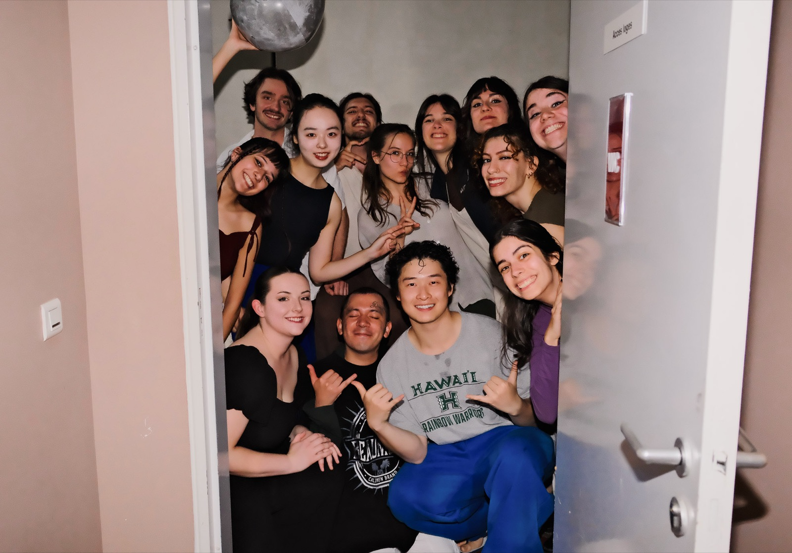
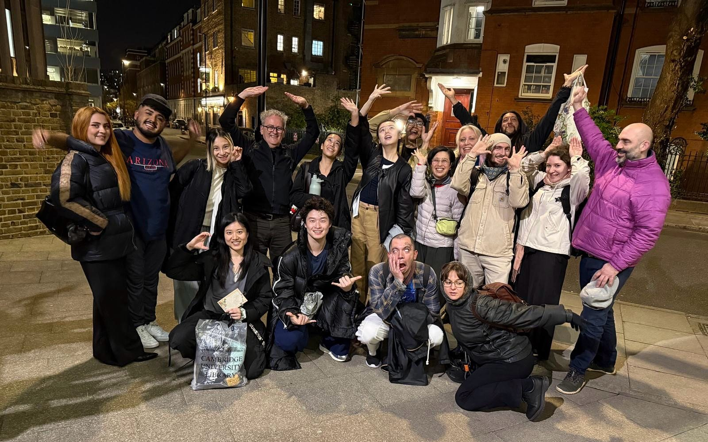
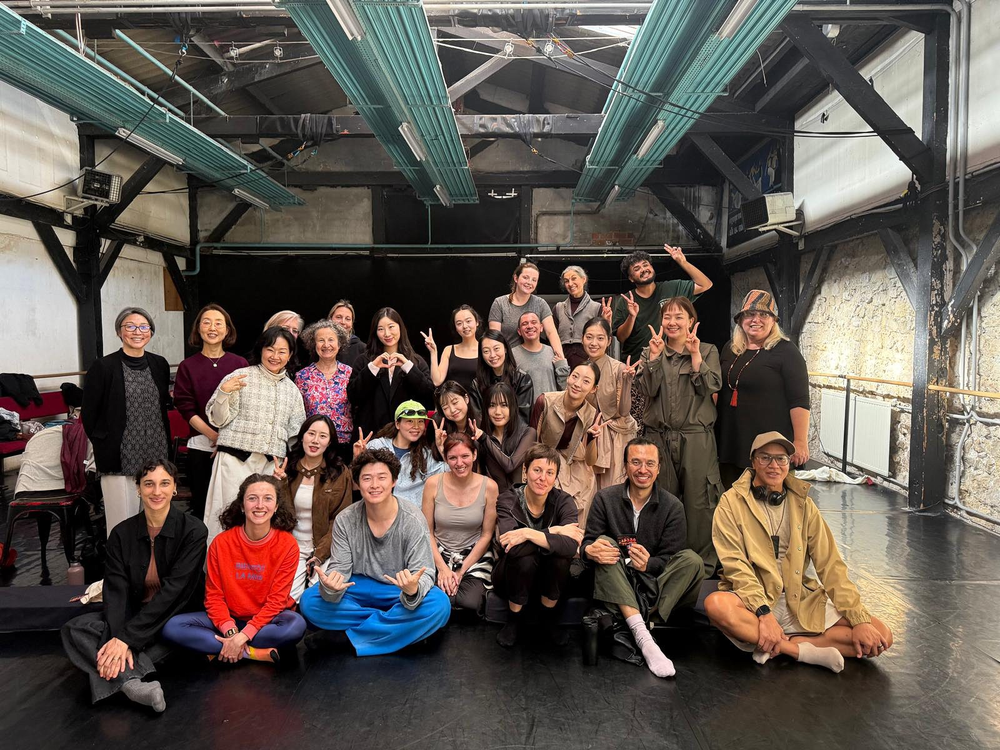
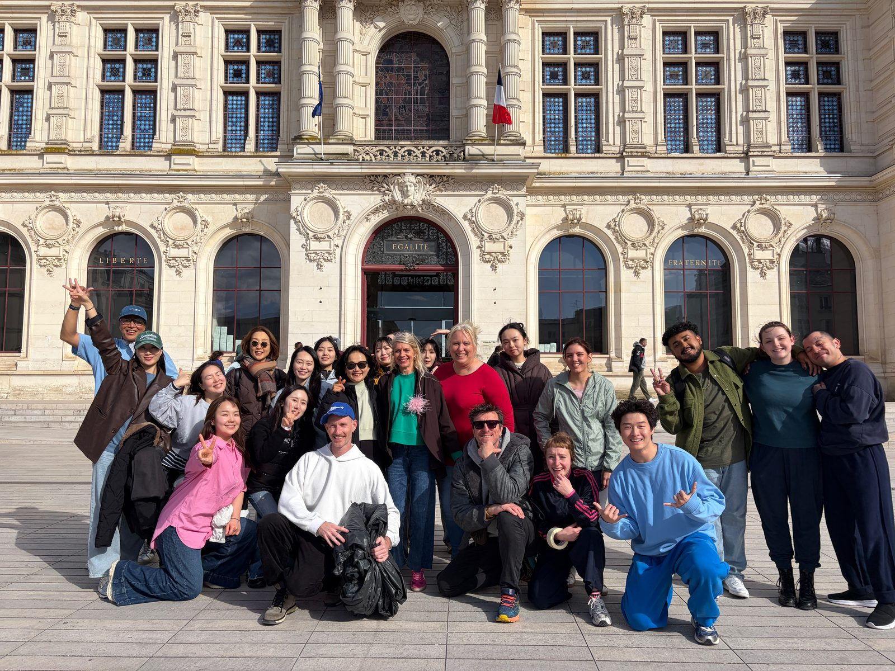
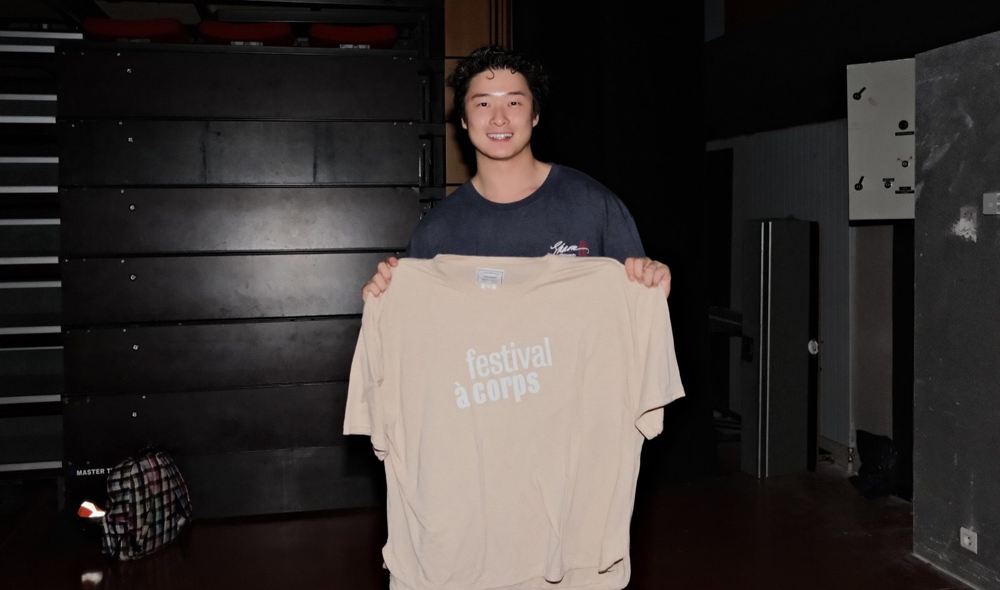
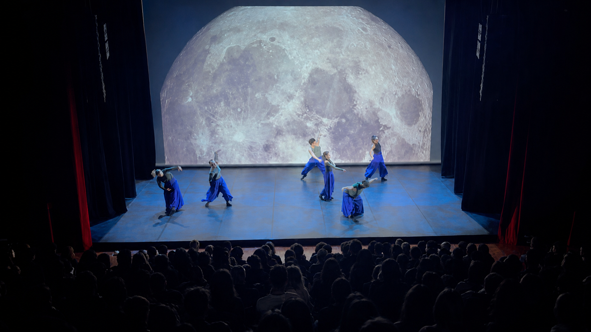
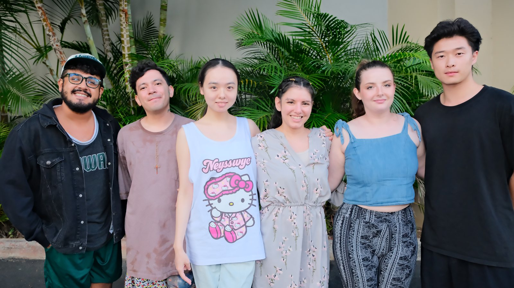

University of Hawaiʻi at Mānoa Dance Program
Festival à Corps
International Performance TourSelected as a student artist for the University of Hawaiʻi at Mānoa Dance Program’s international tour across London, Paris and Poitiers. The tour culminated at the 25th Festival à Corps at the Université de Poitiers, France, where I performed in Tides of the Moon and KOMMOS.

Tour
London, Paris and Poitiers, France
The tour connected the University of Hawaiʻi at Mānoa Dance Program with performances and artistic exchange across London, Paris and Poitiers. Its final stop was Festival à Corps at the Université de Poitiers.





Performance
Festival à Corps, Université de Poitiers
At Festival à Corps, I performed in two works: KOMMOS, a large-scale collective performance in the center of Poitiers, and Tides of the Moon, the University of Hawaiʻi at Mānoa dance theatre work presented at the Maison des étudiants.
- Performer
- Zhenhao Wen
- KOMMOS
- Artistic direction: Christophe Béranger and Jonathan Pranlas-Descours. 28 March 2026, Place du Maréchal Leclerc, Poitiers.
- Tides of the Moon
- Choreography: Sami L.A. Akuna and Kara Jhalak Miller. 1 April 2026, Maison des étudiants, Poitiers.
- Institution
- University of Hawaiʻi at Mānoa, Department of Theatre and Dance
Coverage
UH News named Zhenhao Wen among six student artists on the London, Paris and Poitiers tour. It also reported that Tides of the Moon sold out in Poitiers and ended with a standing ovation.
Read “UH dancers excel on global stage”
Festival à Corps documents both programmed works. Its official page lists KOMMOS, the artistic directors and performance dates; the official 2026 programme (PDF) lists The Tides of the Moon under the University of Hawaiʻi at Mānoa. Sine Qua Non Art’s company agenda also records the 2026 KOMMOS opening performance. These French sources do not name individual student performers.
Writing after the festival, Cult.news described KOMMOS as a large-scale student performance in the city square and also reviewed the Hawaiʻi moon work. The article discusses the works, not individual dancers.
Sine Qua Non Art’s official video archive documents the KOMMOS 2019 Athens creation, with a different cast and location. It is linked here as background on the work, not as footage of Poitiers 2026.


Captions as published in “UH dancers excel on global stage,” 21 April 2026. Files are served from this site; nothing is loaded from the university’s servers.
Context
The University of Hawaiʻi at Mānoa tour continued a longstanding exchange with Intercultural Roots in London and the Université de Poitiers in France, bringing performers and educators into dialogue through dance, workshops and shared research.
University background on the London and Poitiers partnership